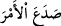
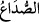
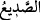
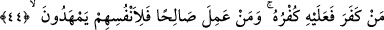
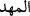
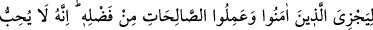
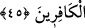

olarak ‘İşi ayırdı’ mânâsına “__WORD__, ağrıdan başın çatlaması mânâsına “__WORD__,
geceden yarılıp ayrılarak çıktığı için fecre “__WORD__ denir.
44. Kim inkâr ederse, inkârı kendi aleyhine olur. İyi işler yapanlara gelince, onlar
da kendileri için (cennetteki yerlerini) hazırlamış olurlar.
“Kim” dünyâda Allâh’ı “inkâr ederse, inkârı”nın vebâli ve cezâsı başkasının değil
“kendi aleyhinedir.” Bu cezâ ise müebbed cehennem ateşidir. “İyi işler yapanlara”
Allâh’ı birleyen ve tevhidden sonra samîmî tâatte bulunanlara, beğenilen amel
işleyenlere “gelince, onlar da” sadece “kendileri için (cennetteki yerlerini)
hazırlamış olurlar.” Yâni, onlar cennette bir yer/köşk yapmış, döşemiş ve hazırlamış
olurlar. Kendisi için cennette oturacağı yer yapmış ve yaygı sermiş olurlar.
“__WORD__ kelimesinin asıl anlamı bebeğin yatağını/beşiğini düzeltmektir. Sonra istiâre
yoluyla başka şeyler için de kullanılmıştır. Nitekim Keşfü’l-esrâr’da böyle
geçmektedir.
Kabirlerde yatılacak yerleri hazırlamak da âyette bahsedilen hazırlamaya dâhildir.
Çünkü ancak sâlih amel ile kabir evi ve cennet yurdu düzeltilip ıslah edilmiş olur.
Rivâyet edilir ki kabir ehlinden bazıları, kıyâmet gününe kadar övülmeye lâyık, tefriş
edilmiş, reyhan kokulu, ince ipekten ve parlak atlastan döşenmiş bir berzahta olacaktır.
Bir hadîste şöyle buyrulmuştur: “İnsanın ameli kendisiyle birlikte kabrine defnedilir.
Eğer ameli güzelse sâhibine ikramda bulunur. Kötü ise onu (azâba) teslim eder.”
Yâni ameli sâlih ise sâhibini ünsiyet ettirip rahatlatır, onu müjdeler, kabrini genişletir,
nurlandırır ve o kimseyi sıkıntılardan ve korkulardan korur. Eğer ameli kötü ise sâhibini
korkutur, ürkütür, kabrini karanlık kılar, daraltır ve o kimseye azab eder. Onu
sıkıntılarla, korkularla, azab ve cezâ ile karşı karşıya bırakır.
İşret yaprağını/âhiret azığını kendi mezarına gönder
Senden sonra kimse göndermez, sen önceden gönder
45. Zira Allah, îman edip iyi işler yapanlara kendi lütfundan karşılık verecektir.
Şüphesiz O, kâfirleri sevmez.